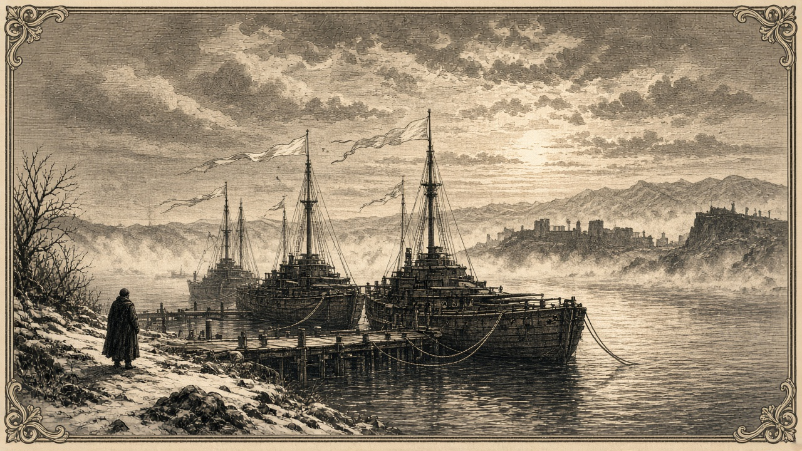

カペレナと黒潮が停戦 約九十七期の戦争終結
第100期ごろ始まった戦争が終結 累計損害は黒潮24万6,100人、カペレナ14万5,400人 潮見議長が勝利を宣言

【総合部】第197期、カペレナ王国と黒潮自治国が停戦に合意し、両国の戦争が終わった。第100期前後に始まった戦いは、首都陥落や遷都、黒潮の海底都市への退避、艦砲と占領を経て約九十七期に及んだ。前期までの累計損害は黒潮二十四万六千百人、カペレナ十四万五千四百人。黒潮は人口一万八千二百人、兵力三万九百人、領土二区画で、首都欄は空欄。カペレナは人口四十四万四千六百人、兵力十二万八千七百人、領土百四十七区画。停戦により黒潮は交戦国を持たなくなり、カペレナは藍岬共和国連邦・翠湖自治州・スルガとの戦争を続ける。詳報は2面。
潮見議長「カペレナは折れた。黒潮の勝利だ」
停戦後、黒潮自治評議会の潮見玄吾議長は広場で「カペレナは折れた。黒潮の勝利だ」と宣言した。議長が勝利の根拠に掲げたのは領土の回復ではなく、首都を失い領土二区画となっても黒潮が独立を保ち、交戦国ゼロで停戦を迎えたことだ。人口一万八千二百人の国は、これから復興に向かう。
同じ第197期、スルガは予告どおりカペレナと開戦した。カペレナは黒潮戦の停戦と同日に新たな戦線を抱えた。銀嶺ではあろあろの山岳兵が首都モンタルジェントの歩兵を全滅させ、橙原ではなのです軍が村（45,54）を占領。火災は二十件、人口減は七万八千八百人と報告された。国特集は8面の金野伯爵領。